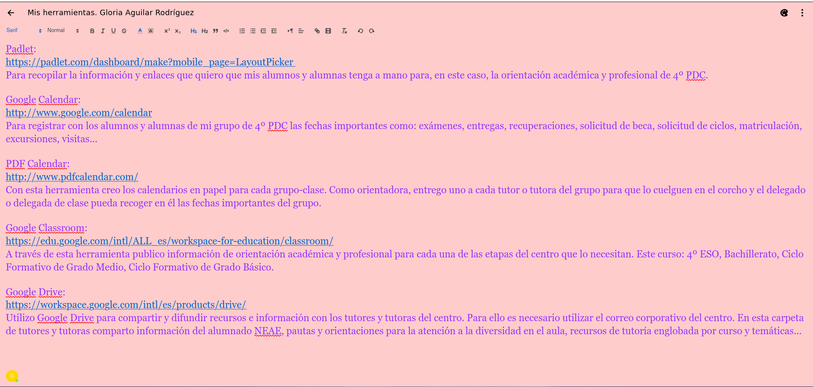

Herramientas útiles
Os dejo un pantallazo de mi memo share, donde recopilo una serie de herramientas útiles para trabajar. Algunas de ellas las conocéis porque las usamos juntos. Todas estas herramientas os facilitan la vida, en un momento en el que debéis de manejar mucha información y enlaces.
